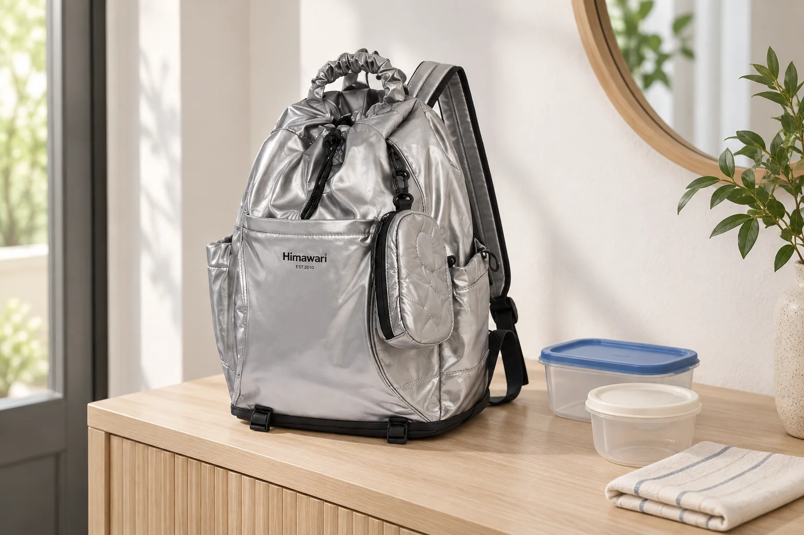

빈 용기를 넣고 뺄 때 확인할 백팩의 폭

빈 용기는 가벼워서 외출 짐으로 더해도 부담이 적어 보입니다. 하지만 가방 안에서는 책처럼 납작해지지 않고 천 소품처럼 모양을 바꾸기도 어렵습니다. 백팩을 고를 때 무게가 가볍다는 사실과 차지하는 공간이 작다는 판단을 나누어 볼 이유입니다. 단단한 물건을 옮기는 날에는 가방의 폭과 입구, 꺼낼 때 잡을 면이 서로 맞는지 살펴봅니다.
같은 용기를 집에서 정리해둔 모습과 운반할 모습도 다를 수 있습니다. 뚜껑을 따로 둔 상태에서는 겹쳐졌던 본체가 뚜껑을 닫으면 하나의 부피가 됩니다. 여러 개를 같은 보관재에 담는다면 그 묶음의 여밈과 손잡이까지 실제 외곽에 포함됩니다. 백팩을 고르기 위해 필요한 것은 용기의 재료나 관리법을 새로 정하는 일이 아니라 들고 나갈 형태를 그대로 준비하는 일입니다.

큰 몸체에도 입구의 조건이 있다
Himawari No.0515 실버의 제품 사진에서는 세로로 긴 몸체와 윗부분 손잡이, 여러 방향으로 이어지는 검정 선과 끈을 볼 수 있습니다. 카탈로그 외부 크기는 가로 35 × 세로 46 × 폭 18cm입니다. 바깥 규모가 넓어 보이더라도 이 수치를 내부 바닥이나 열린 입구의 크기로 그대로 쓰지는 않습니다. 단단한 묶음은 몸체 안에 놓일 자리와 그 자리까지 지날 입구를 모두 확인해야 합니다.
직사각형 용기와 원형 용기는 같은 가로 폭이어도 가방 안의 모서리와 다르게 만납니다. 직사각형은 한쪽 모서리가 곡선 입구에 걸릴 수 있고, 원형은 둘레 옆에 좁은 빈틈을 남길 수 있습니다. 어떤 모양이 더 많이 들어가는지 일반 규칙을 만들기보다 현재 묶음이 가방의 어느 방향으로 놓이는지 봅니다. 가방 외곽과 소지품 형상의 관계가 실제로 쓸 공간을 바꾸는 부분입니다.
빈 용기를 써서 처음 비교한다면 뚜껑과 잠금 부품을 평소 운반 상태로 둡니다. 가방 입구를 지날 때 기울이는지, 바닥까지 내려가며 다른 부분에 닿는지 확인할 수 있습니다. 가볍다는 이유로 가방을 흔들어 자리를 만들기보다 넣는 방향을 눈으로 봅니다. 정상적으로 들어가는 길을 알면 다른 소지품을 더했을 때 무엇 때문에 동작이 달라졌는지도 읽기 쉽습니다.
가방 폭을 쓰는 방향
용기를 눕혀 담는 경우와 세워 담는 경우에는 차지하는 높이와 폭이 바뀝니다. 허용되는 운반 방향은 해당 물건과 보관재의 안내를 따릅니다. 가방 크기에 맞추어 아무 방향이나 선택하기 전에 실제로 사용할 수 있는 형태를 정하는 것입니다. 빈 용기를 비교하는 장면은 그 형태를 시험할 수 있는 준비이며, 이후 내용물이 생긴 용기까지 같은 조건으로 확대하지 않습니다.
단단한 묶음 옆에 지갑이나 필통을 놓으면 어느 쪽 공간이 먼저 차는지 봅니다. 몸체의 넓은 한 면을 용기가 차지했을 때 남은 짐이 한쪽으로 몰릴 수 있습니다. 평소 짐을 먼저 가득 넣은 뒤 용기를 마지막 빈틈에 끼우는 방식보다, 두 큰 묶음이 함께 놓이는 면을 고르는 편이 비교에 도움이 됩니다. 가방을 닫을 때 위쪽에서 무엇을 누르게 되는지도 같은 상태에서 살펴봅니다.
용기 하나는 들어가는데 두 개를 함께 넣으면 입구에서 방향을 바꾸기 어려울 수 있습니다. 각각의 크기와 두 물건을 겹친 묶음은 다른 운반 대상입니다. 한 개씩 꺼내는 구성으로 쓸지, 보관재째 통째로 꺼낼지 정하면 필요한 폭이 분명해집니다. 뚜껑을 잡는 등 물건이 안내하지 않은 부위를 손잡이처럼 쓰기보다 실제 잡을 수 있는 면까지 여유를 둡니다.
꺼낼 손이 들어갈 여유
빈 용기가 가방 바닥에 꼭 맞게 놓였더라도 손가락을 넣어 잡을 공간이 없으면 다시 꺼내기 번거로울 수 있습니다. 입구에 두 손을 넣어야 하는지, 다른 짐을 먼저 빼야 하는지 이어서 봅니다. 집에서는 책상 위에 가방을 크게 열 수 있지만 약속 장소에서는 좁은 의자 옆에서 꺼낼 수도 있습니다. 자주 건네는 물건이라면 도착한 곳에서 가능한 동작을 크기 선택에 반영합니다.
이 경우 넓은 백팩 하나를 고르는 방법과 작은 백팩에 별도 운반 묶음을 더하는 방법을 비교할 수 있습니다. 전자는 한 가방 안에 모으는 대신 평소 큰 외곽을 갖고 다닙니다. 후자는 가방 크기를 유지하는 대신 손에 들거나 관리할 묶음이 늘어납니다. 어느 쪽이 단순한지는 걸어갈 거리와 양손을 쓰는 장면, 도착한 곳의 짐 보관 위치에 따라 달라집니다.
가방을 바꿀 생각이 없다면 가져갈 용기의 수를 나누는 선택도 있습니다. 한 번에 전부 담는 일을 목표로 두지 않고 실제로 편하게 넣고 꺼낼 묶음을 고릅니다. 다만 여러 번 이동할 일정이 맞는지와 그동안 둘 자리는 별도로 생각합니다. 백팩 여밈을 겨우 닫는 순간의 성공보다 출발부터 건네는 순간까지 같은 형태로 다룰 수 있는지가 필요한 조건입니다.
No.0515처럼 넓은 외곽의 후보를 볼 때에는 가로 수치 옆에 실제 용기 묶음의 폭을 적어볼 수 있습니다. 그다음 입구와 바닥, 다시 잡을 면에 관한 답을 확인합니다. 닫힌 묶음의 실제 외곽을 적어두면 가방을 바꾸는 날에도 같은 기준으로 비교할 수 있습니다. 가방을 고르는 자리에서는 구부러지지 않는 짐이 어느 방향으로 들어가고 어떤 손동작으로 나오는지가 크기 비교의 중심이 됩니다.